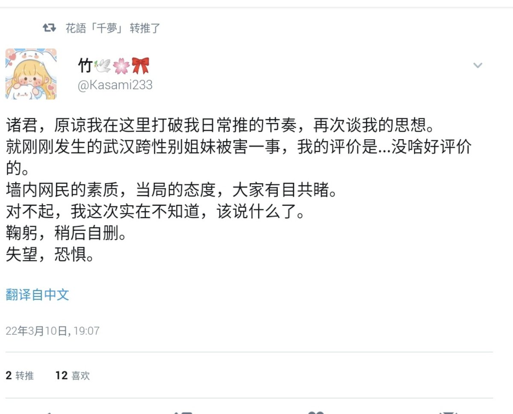
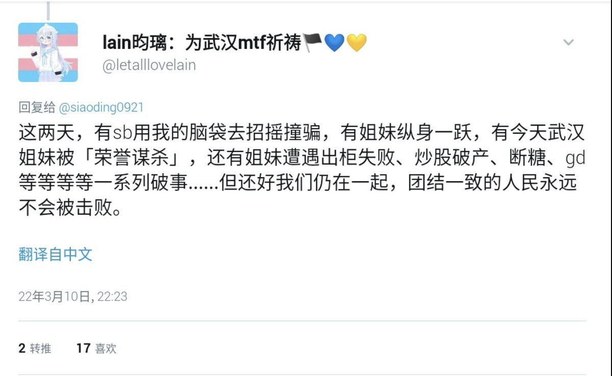
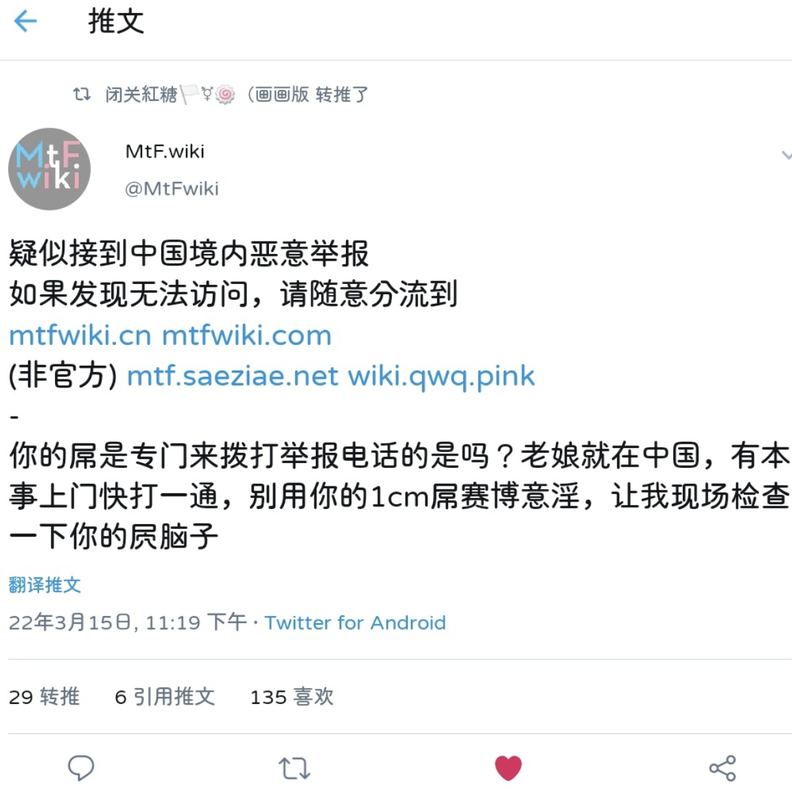

時璃風医詩🌈🏳️🌈
@hagishigure
@CynunVIIV 🤔。當初一個案子能把整個圈子的潛水人都炸出來。



Cynun VIIV
@CynunVIIV
从一些长者（？）那里听闻了以前的所谓“跨圈”的一些碎片故事。
（如果需要一个时间锚点，“G+难民”或许算是？）
Cynun感觉当时的那个圈子已经不存在了，现在的跨圈只是被推送算法所操纵，被流量劫持，内在被架空的一个尸体……
人们还在互相帮助吗？